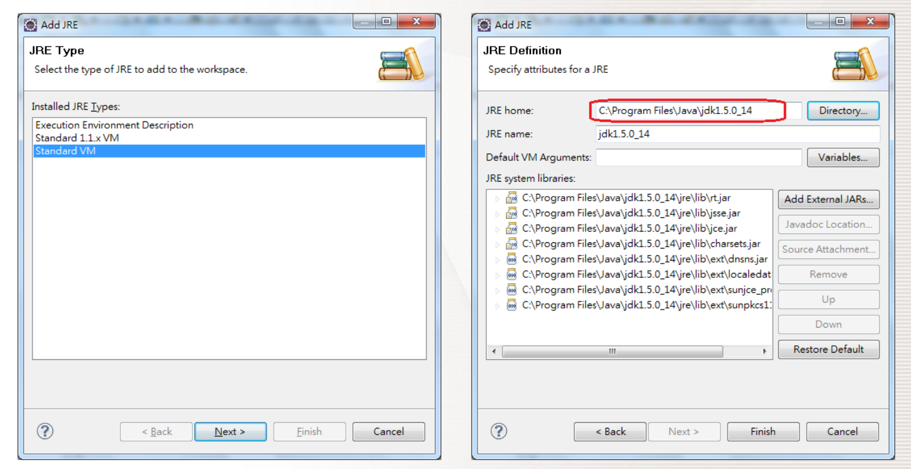
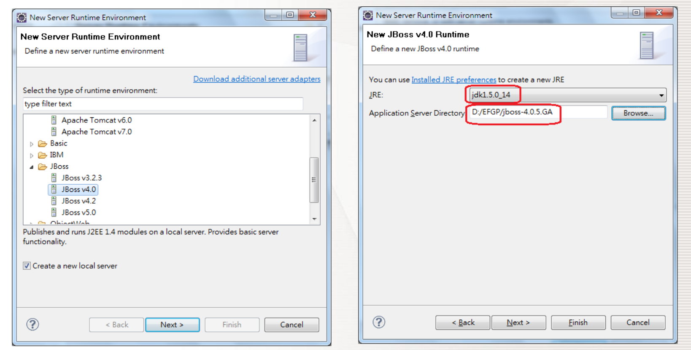
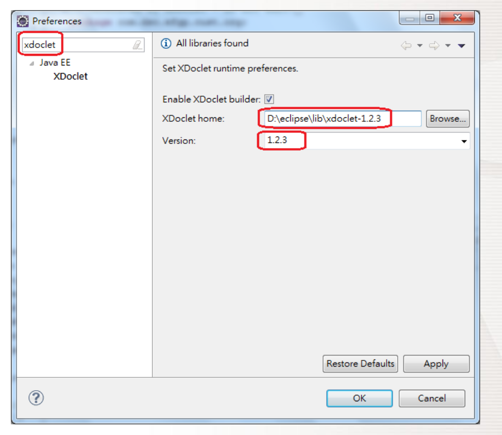
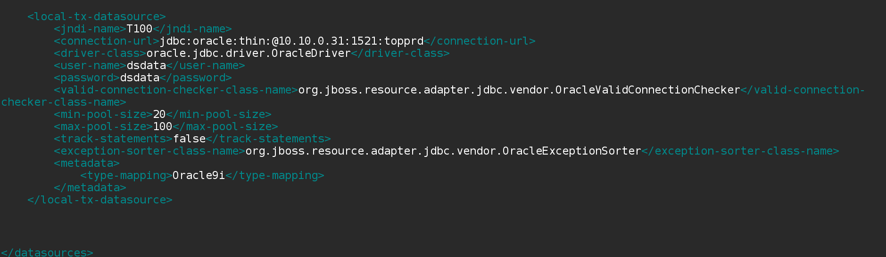
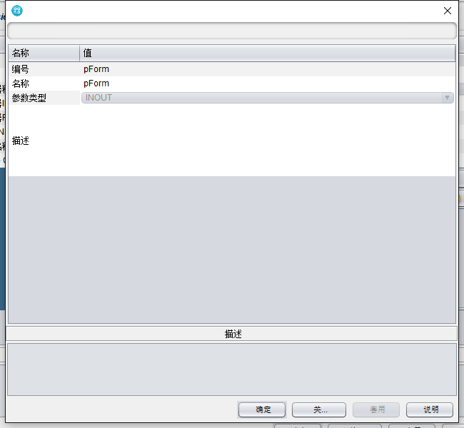
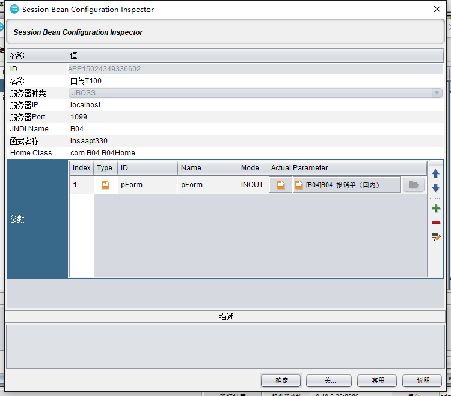
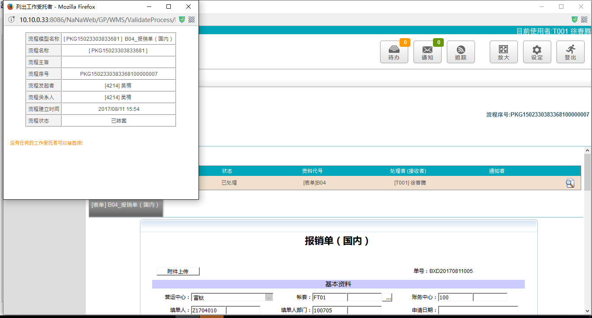
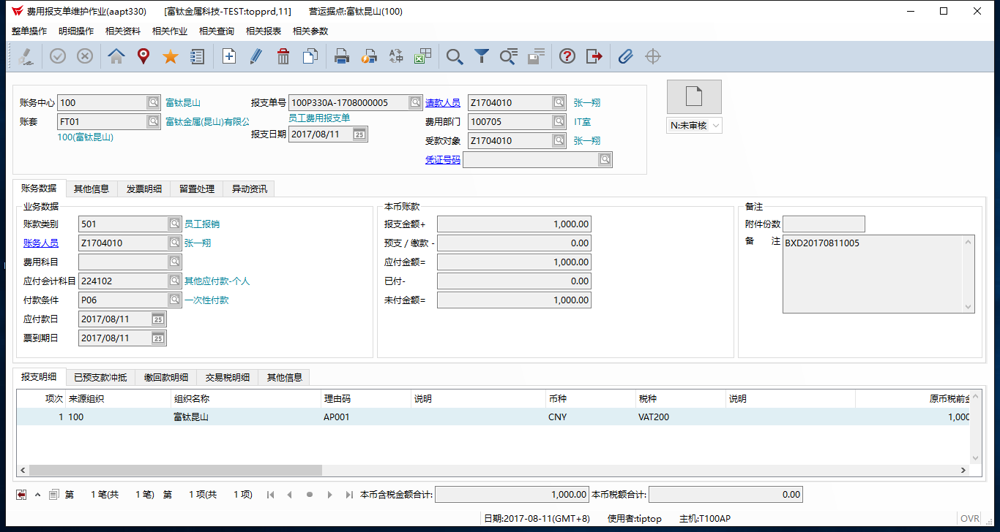

回到目錄
BPM信息回传T100操作手册
安装Eclipse JavaEE
安装Eclipse JavaEE Lindigo Serice Release 2版本
需要配置JDK1.5环境变量增加jar包（axis.jar ,custom-nana-util.jar,nana-serice-client.jar）
JAVA
设定Installed JREs
Eclipse执行windows->preferences
直接搜索 installed jres
新增一个JRE环境
选择JRE形态为 Standard VM
设定 jdk路径

设定runtime environment
执行windows->preferences
直接搜索 runtime environment
新增一个Server环境
选择 AP Server形态为 Jboss v4.0
设定 JRE环境(jdk1.5.0_15)以及 jboss路径

设定Xdoclet
执行windows->preferences
直接搜索 xdoclet
设定路径并指定1.2.3版

建完所有项目会自动生成7个.java
在xxxBean.java里编程每个新增的方法前都需要加上模版注释T100那里才能够识别
完成所有代码编译之后需要Run XDoclet本地运行一遍
打包成 EAR包
放到服务器C：\BPM\jboss-4.2.3GA\server\default\deploy =>停止 BPM server 关掉 cmd => 请理缓存 default\data tmp work 删除 => 重启服务器C：\BPM\run.bat
抓取T100数据 在服务器BPM\jboss-4.2.3GA\server\default\deploy\
nana-ds里编写
如图 
流程设计
在流程最后一关加上“服务任务” =>叫用应用程序=> +session bean


实际测试
在.33里测试结果如图

